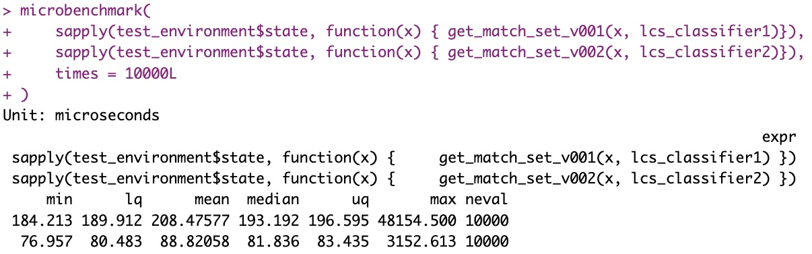

RLCS, day 1.
Intro
So I wasn’t kidding. I really like this “Learning Classifier System” (aka LCS) idea, and I really want to develop the R package for it, which I will call “RLCS” (clever, hu?).
Now I have to start somewhere, and so I will keep it simple for now. I will first focus on an LCS that does supervised learning only (that means, no reinforcement learning for now.)
Also, I will focus on the simplest binary environments. In LCS lingo, for supervised classification, environment is equivalent to saying dataset. Each entry to classify is presented as binary strings, and the class (aka action) is, for simplicity, also a simple 0 or 1.
So binary classification of binary strings.
This might sound simplistic (and it is somewhat, yes) but the feature engineering and codificatioin into GA-compatible individuals is often harder than the actual training of a ML algorithm.
Anyhow. I will forego some details for now, but suffice to say I’m working right now towards a Michigan-style LCS.
The ternary alphabet for conditions
Now we will receive an environment/dataset as input that has “states” in binary format, and actions/classes as either 0 or 1.
## Suppose test data is:
test_environment <- data.frame(state = c('00011', '10010', '01110', '00001'),
class = c(0, 0, 0, 1))(It’s not enough info to conclude that, but these examples all agree with a classifier that would say, in human readable format: “The Class is the negated bit 4 of the input”.)
One of the key aspects of an LCS, is that it will produce rules. A rule is a pair of a condition and an action.
A condition in turn is written (in our current approach) as a string of a ternary alphabet, namely characters from the set {0, 1, #}, where # means wildcard and matches either 0 or 1.
Now for each input of the environment (each entry of the dataset), for today’s purposes, we will want to know which rules it matches (regardless of the action). In other words, we want to match an input to condition(s). That will tell us the “Match set”.
Matching is one key aspect of the LCS overall algorithm, one that will be run a lot, and therefore I worry that it could be slow.
A couple more keywords: A classifier is a rule and its statistics. (We will skip the statistics part for today.) And a population is our set of classifiers.
Short of going the way of C++, I have coded one first simplistic function that takes a classifier set as a dataframe, and another one that uses a list of lists instead.
Conditions can easily be written as strings:
conditions <- c('#001#', '10#10', '##110', '###0#')
actions <- c(0, 0, 0, 1)For the first approach, it was quite straightforward:
lcs_classifier1 <- data.frame(id = 1:4,
condition_string = conditions,
action = actions, #simplest is binary for supervised
accuracy = 1,
numerosity = 1,
first_seen = c(1, 2, 3, 4) ## I'm inventing a coverage trigger
)
## Find Matching Rules
get_match_set_v001 <- function(ti_condition, pop) {
# Only part relevant for matching
ti_cond <- unlist(strsplit(ti_condition, ""))
pop <- pop[, c("id", "condition_string")] # Same
which(sapply(1:nrow(pop), function(i) {
t_cond <- unlist(strsplit(pop$condition_string[i], ""))
relevant_positions <- which(t_cond %in% c("0", "1"))
all(t_cond[relevant_positions] == ti_cond[relevant_positions])
}))
}
test_that("validate correct match on test set", {
expect_equal(
get_match_set_v001(test_environment$state[1], lcs_classifier1),
c(1)
)
expect_equal(
get_match_set_v001(test_environment$state[2], lcs_classifier1),
c(1, 2)
)
})
(OUTPUT:) Test passed 🥳For the second approach, I needed some more supporting functions:
######
## Option 2: Use list instead of Data.frame and pre-calculate match sets
## Function to create a new rule from a condition string and an action
## THIS IS VALID FOR CLASSIFICATION, NOT FOR Reinforcement Learning!!!
## In our case, a new rule has: A condition string, an (correct!) action
## Since action is correct, this is useful for future "covering"
## AND we set accuracy to 1
new_supervised_rule <- function(condition_string, action) {
list(id = 1,
condition_string = condition_string,
condition_length = nchar(condition_string),
condition_list = list("0" = which(unlist(strsplit(condition_string, "")) == "0"),
"1" = which(unlist(strsplit(condition_string, "")) == "1")),
action = action,
accuracy = 1,
numerosity = 1,
first_seen = 1)
}
## Function to return max id from a classifier set in list format
max_id_in_classifier <- function(pop) {
max(sapply(pop, function(x) x$id))
}
## Function to add rule to a population.
## date_rule_born will be useful stat for future, setting as parameter for now.
add_valid_rule_to_pop <- function(pop, condition_string, action, date_rule_born = 1) {
t_rule <- new_supervised_rule(condition_string, action)
t_rule$id <- max_id_in_classifier(pop)+1
t_rule$first_seen <- date_rule_born
pop[[length(pop)+1]] <- t_rule
pop
}
## Support function for human-compatible printing:
make_pop_printable <- function(classifier) {
data.frame
rbind.fill(lapply(1:length(classifier), function(i) {
t_c <- classifier[[i]]
data.frame(id = t_c$id,
condition = t_c$condition_string,
action = t_c$action,
accuracy = t_c$accuracy,
numerosity = t_c$numerosity,
first_seen = t_c$first_seen)
}))
}
## Matching with list formatted population.
get_match_set_v002 <- function(input_state, pop) {
# Only part relevant for matching
ti_cond <- as.integer(unlist(strsplit(input_state, "")))
which(sapply(1:length(pop), function(i) {
rule <- pop[[i]]$condition_list
all(ti_cond[rule$'0'] == 0, ti_cond[rule$'1'] == 1)
}))
}
lcs_classifier2 <- list(new_supervised_rule(conditions[1], actions[1]))
lcs_classifier2 <- add_valid_rule_to_pop(lcs_classifier2, conditions[2], actions[2])
lcs_classifier2 <- add_valid_rule_to_pop(lcs_classifier2, conditions[3], actions[3])
lcs_classifier2 <- add_valid_rule_to_pop(lcs_classifier2, conditions[4], actions[4])
test_that("validate correct match on test set", {
expect_equal(
get_match_set_v002(test_environment$state[1], lcs_classifier2),
c(1)
)
expect_equal(
get_match_set_v002(test_environment$state[2], lcs_classifier2),
c(1, 2)
)
})
We’ll keep the list format for now
microbenchmark(
sapply(test_environment$state, function(x) { get_match_set_v001(x, lcs_classifier1)}),
sapply(test_environment$state, function(x) { get_match_set_v002(x, lcs_classifier2)}),
times = 10000L
)
Lists are more flexible and data.frames are not the fastest option out there anyway. Here the pre-calculations in the second format also helps doing faster matching.
However I know this choice might have an impact, particularly when time will come to implement deletion, subsumption and compaction (all useful for better LCS performance/value). And another idea I have in mind will require further lists management (but it’s too early to discuss that).
But that’s a problem for future me (and nothing that hasn’t been solved already).
Conclusions
Well well: Day 1, and we have covered concepts of environment, states, actions, conditions, rules, classifiers, population and matching/match set.
Along with developping a functional (basic) list for storing classifiers, and a matching function.
Not too bad (albeit all too simplistic and not going for “full-power” flexible LCS implementation).
References
I’ll keep referring to this video (although the book is better to get acquainted with the vocabulary and concepts): intro explaining the algorithm .